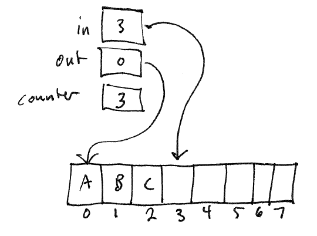

Coordinate the actions of two or more threads (or processes) that
are accessing shared data.
As we have seen previously, these threads will have critical
sections defining accesses and updates to the shared data. Only
one thread must be allowed to be executing a critical section at any
given time.
Example: producer/consumer using a bounded buffer

The producer thread is adding new data items to the buffer: the "in"
variable indicates where the next produced item should be placed.
The consumer thread is removing produced items from the buffer.
The "out" variable indicates where the next consumed value should be
taken from. A shared "numItems" variable indicates how many items
are currently in the buffer. Initially,
in == out
numItems == 0
The shared "numItems" variable keeps track of how many produced
items are currently in the buffer.
The buffer is bounded
because there are only a fixed number of locations in the buffer.
(I.e., it is an array.)
Note that a pipe used for inter-process communication is a bounded
buffer of precisely this form! Also note that the buffer is being
used as a queue: items
entering and leave the buffer in the same order.
There is one situation where the producer must wait. [What is
it?]
There is one situation where the consumer must wait. [What is
it?]
Code for the producer:
while (true) {
item = produceItem();
while (numItems == BUFFER_SIZE) {
// do nothing
}
buffer[in] = item;
in = (in + 1) % BUFFER_SIZE;
numItems++;
}
Code for the consumer:
while (true) {
while (numItems == 0) {
// do nothing
}
item = buffer[out];
out = (out + 1) % BUFFER_SIZE;
numItems--;
doSomething(item);
}
Recall that incrementing or decrementing a variable is actually
implemented by a sequence of several instructions that do not execute atomically:
tmp = variable;
tmp = tmp + 1;
variable = tmp;
The variable "tmp" is generally a processor register, or a local
variable (located in the thread's private stack memory).
As we saw in lecture 9, updating a
shared counter without synchronization does not always work
correctly. Specifically, it is vulnerable to lost updates. That means that
after an item has been added to or removed from the buffer, the counter
variable (numItems) may not reflect the correct number of items in the
queue.
Consider possible interleavings of the following instruction
sequences if executed by two concurrent threads:
1: tmp = variable;
2: tmp = tmp + 1;
3: variable = tmp;
4: tmp = variable;
5: tmp = tmp - 1;
6: variable = tmp;
The interleavings 1,2,3,4,5,6 and 4,5,6,1,2,3 yield the correct
result: no net change in the variable.
The problem is that there are many interleavings that do NOT yield
the correct result. For example, consider the interleavings that
start with the sequences 1,4 or 4,1. Regardless of what
instructions execute next, we are guaranteed to lose one of the
updates. The two threads are now racing to see which one will reach
the store (instructions 3 or 6) first. Whenever the behavior of a
program depends on the order of instructions which execute concurrently
and access shared data, we say that there is a race condition in the
program. Race conditions are often serious bugs. In the
case of the producer and consumer, some items may be lost (because the
numItems counter was not incremented properly).
The solution is to define the instruction sequences where shared
data is accessed as critical sections, and use synchronization to
prevent multiple threads from entering critical sections simultaneously.
Many possible solutions to the critical section that meet these
criteria are possible.
A really simple solution to the critical section problem, for kernel
code only, is to make the kernel nonpreemptive. This means
that at most one kernel thread may be executing kernel code at a time.
Note that interrupt handlers are still
usually allowed to run while a kernel thread is executing. What
is explicitly disallowed in a nonpreemptive kernel is for a kernel
thread to be suspended while executing kernel code (i.e., before
returning to user mode) and another kernel thread (executing kernel
code) to dispatched.
A nonpreemptive kernel trivially solves the critical section problem
because it is not possible for multiple kernel threads to be executing
kernel code at the same time.
The nonpreemptive design is used in
For uniprocessor systems, a nonpreemptive kernel is fine.
However, on a multiprocessor system, such a design can greatly hurt
parallelism. For example, consider two processes running on
different CPUs that make system calls at the same time:
[diagram]
Because the system calls are handled in kernel mode, only one system
call can be processed at a time.
Another problem with nonpreemptive kernel designs is that a
kernel-only process may need to perform an operation that takes a
noticeable amount of time. This can degrade the responsiveness of
the system, because user-mode processes cannot run while the
kernel-only process is running.
In a preemptive kernel, multiple kernel threads may be executing
kernel code "at the same time". This means that all critical
sections must be protected by explicit synchronization mechanisms, such
as mutex locks. Preemptive designs tend to naturally accomodate
multiprocessor systems, because there is no problem with multiple
kernel threads executing kernel code (such as system call handlers) at
the same time.
Examples of preemptive designs:
One issue with preemptive kernels is lock granularity. [what to
say about this?]
There are lots of ways to solve the critical section problem.
Easy solution (GeekOS): disable interrupts when entering a critical
section. The timer interrupt handler will not run, and therefore
the system will not switch threads. Re-enable interrupts when
leaving the critical section. Works on a uniprocessor machine,
but not on a multiprocessor machine. Useful for very short
critical sections. We don't want to disable interrupts for too
long, since that will hurt responsiveness (e.g., we won't be able to
handle keyboard interrupts.)
[Issue: nesting of critical sections.]
Peterson's solution is a way of protecting critical sections for two
threads (0 and 1) which uses two shared data variables/data structures:
bool flag[2];
int turn;
Let "i" be the id (0 or 1) of the current thread, and "j" be the id of the other thread.
Enter a critical section
flag[i] = true;
turn = j;
while (flag[j] && turn == j) {
// wait
}
Leave a critical section
flag[i] = false;
The "flag" array is an indication of whether or not a thread needs
to execute a critical section. If flag[i] false, thread i is has
left (or never entered) the critical section.
This works. Why?
In the uncontended case (only one thread trying to use the critical
section), it obviously works, because the other thread's flag will be
set to false.
If a thread shows up while the other thread is currently executing
the critical section, it will have to wait (in the while loop) until
the other thread sets its flag to false, then it can run.
If both threads try to enter the critical simultaneously, they will
both set their flags to true, and they will both set "turn" to the
other thread's id. So, one of them will "win" and start executing
the critical section. When the winner leaves the critical
section, it will set its flag to false, allowing the other thread to
run.
Note:
implementing this technique requires some care because both the
compiler and the processor can re-order loads from and stores to
memory. For example, the instruction setting the thread's flag
could be reordered with the instruction setting the turn
variable. This could allow both threads to enter the critical
section at the same time.
[TODO: show interleaving?]